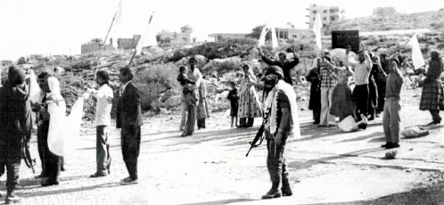

Miracles in Lebanon
Much has been written about the tremendous work of Chabad during the war in the north. This time, we wanted to hear about the war from the perspective of two Lubavitcher soldiers. * R’ Yankele Gloiberman of Shikun Chabad in Lud served as an officer in a paratrooper unit known as the 96th Division an

It has been thirty years since the first Lebanon war, known as “Peace in Galilee.” The war began after years during which PLO terrorist bands became entrenched in Lebanon and attacked Israel’s northern border. Many Jews lost their lives and there was tremendous destruction of property. The attempted assassination of the Israeli ambassador in London, Shlomo Argov, was used as a justification for the war whose purpose was to restore peace for those living in the north and to eliminate terrorists.
In the initial days of the war, the Israelis were largely successful. Within a short amount of time, IDF forces arrived on the outskirts of Beirut. Then, politicians undermined all the successes and halted the campaign at its peak. The Rebbe screamed about the astonishing halt in the campaign and the irresolution and spoke about this a lot in his talks. On 22 Sivan 5742 he said:
Only completing the operation in a way that guarantees the security and peace of all Jews in the Holy Land can justify the loss of those who died in this campaign, may Hashem avenge their blood. Each of one of them is an entire world and the endangerment of a single one of them sets aside the entire Torah. Therefore, since it was necessary to undertake this campaign in order to secure the security and peace of Jews in the Holy Land, they must complete it in order to justify, to the extent possible, the korbanos that fell, especially when doing so will prevent additional korbanos. Not a single additional Jew, who is an entire world, should be lost.
OUTREACH UNDER FIRE
Thirty years ago, when the Defense Minister and then Major-General Refael Eitan gave the signal for the war, R’ Yankele Gloiberman served as an officer in the paratrooper unit known as the 96th Division and was one of the first to reach Beirut.
“Soldiers knocked at the door of our home in Lud on Shabbos afternoon and informed me of an immediate mobilization. No one was surprised, since everyone knew that the tremendous restraint in the face of terrorist attacks in the north would have to end at some point.
“I told the soldiers that since this wasn’t particularly urgent, I would join the rest of the soldiers in the Division on Motzaei Shabbos at the jump-off base near Lud. For an entire night we readied all the vehicles, the Armored Personnel Carriers (APC), tanks and artillery cannons, and with the first light of day we left with semi-trailers in the direction of Nahariya. My job was like the other fighters in the unit, but I had an additional task – evacuating the dead as well as treating the soldiers in shock. In just one day I switched from being the secretary of the Vocational School and the personal secretary of R’ Efraim Wolf to being a soldier on the battlefield.”
The instructions were clear. The Israeli army was going to conquer Beirut and eradicate the terrorist nests in Lebanon.
“That was our goal. When we arrived in Nahariya, the division broke up into two groups. One group broke through from the east, and the second group to which I was attached came in from the coastal direction. They put us on a warship from which we disembarked at the coastal highway that led to Tyre and Sidon. The commanders thought it would be a quick campaign, which is why they did not want to clean out house after house, but just wanted to reach Beirut as quickly as possible. The plan was to flank the terrorists from inside Lebanon. The ones who led the way were Shayetet 13, the elite naval commando unit of the Israeli Navy, a Special Forces unit.”
They left Nahariya at noon on Sunday and after a few hours, Gloiberman and his friends disembarked at the mouth of the Beirut River Valley with their goal being to split Lebanon in two. They waited for the rest of the soldiers who were invading over the border and were involved in heavy fighting.
“From the moment we set down from the ship with the tanks, the cannons, and half-tracks to the shore, we were shot at by terrorists who were at points spread out over the coast. Bombs and rockets landed on us and we tried identifying the sources of the shooting and returned fire.
“Many terrorists were killed by the Shayetet who led the charge. Several times, I saw death before my eyes. Bombs landed nearby, bullets whistled overhead and I prayed that no evil befall me. Before I had left the house, I had taken a Tanya that I had received from the Rebbe in 5740 with his personal signature. I felt encouraged by the feeling that the Rebbe was protecting me and was with me.
“We waited, fully exposed for two days on the coastal highway. Then we were under severe attack, which forced us to take cover in a ditch on the side of the road until the air force took out the sources of shooting.
“I’ll never forget how saddened I was when we heard about the death of Deputy Chief of Staff General Kuti Adam in the town of Damur, which was near where we were located. He was a personal friend of mine and a great friend of Chabad and the Rebbe. He often visited Kfar Chabad.
“The greatest hardship during the war was maintaining Chassidishe conduct. On the eve of the first Shabbos, my commanders were shocked when they heard I was looking for a mikva. We ended up finding a stream and I immersed in it.”
***
Then slowly, voices began to be heard that spoke against the war. As the war continued, the high command caved in to these voices and forbade shelling buildings for fear of hitting innocent civilians. As a result of saving Arab lives, more and more young Jews were killed when they were forced to clear out house after house. They were killed by booby-traps that the terrorists had set.
“I had access to two vehicles, a jeep and an excavator half-track, and time after time I had to enter the battlefield under fire in order to remove the bodies of our dead boys or those who had been wounded.”
THE TERRORISTS SAW THE T’FILLIN AND WERE AFRAID
Several times, R’ Gloiberman’s life was saved and he tells us about it:
“One morning, before going to battle against the town of Damur, I put on my tallis for Shacharis. Many soldiers put t’fillin on with my help. Suddenly, we saw an astonishing sight; armed terrorists were coming out with their families with white flags of surrender. Our soldiers quickly photographed the amazing sight and I was reminded of what the Rebbe said, quoting the Gemara on the verse, ‘And all the nations of the land will see that the name of G-d is called upon you’ – these refer to the t’fillin on the head. Those terrorists were taken by surprise in their lairs and there is no question that many lives were saved as a result.
“Another miracle took place in the resort town of Jounieh, a town full of hotels frequented by important people in the Arab world. We went from house to house in order to root out terrorists until we arrived at the Hilton Hotel. The manager came out and said that not a single terrorist was in his hotel and he asked us to take care of the place. Then suddenly, a terrorist on the fourth floor opened fire with a machine-gun. In an open miracle, no soldiers were hurt. The bullets went right above our heads. A shell shot from a tank silenced the source of the fire. The soldiers were in utter shock. I felt I had been saved thanks to the Tanya.”
MIVTZAIM WHILE UNDER FIRE
R’ Gloiberman recalled the massive work of the Chabad Mobile Tanks:
“The tanks, led by Rabbi Dovid Nachshon and the Lubavitchers from Tzfas, made an enormous Kiddush Hashem throughout the war. Even before we finished cleaning out an area, the mitzva tanks were there to raise morale. The missiles were still flying and they, with mesirus nefesh, put t’fillin on with the soldiers and encouraged the soldiers, most of whom had lost their friends in battle. I remember how a mitzva tank came with Chassidic music blasting to an area that we had just taken over. The Chief Artillery Corps Officer, General Aryeh Mizrachi, was flabbergasted by the nerve of the Lubavitchers and wanted them to turn back. But after talking with the soldiers and realizing how much their work was needed, he gave them the green light to continue. He himself went up on a tank and blessed them.”
R’ Gloiberman did not wait for anyone and reached out to others on his own:
“We visited the magnificent shul in Bhamdoun, and visited some shuls in Aley. The shuls were neglected. The Jews had long since left the area and on the floor were Siddurim and other holy books. We did not have much time, but did our best to clean up.
“There are moments that I will never forget. One of them was Erev Shabbos before going to the airport in Beirut. I prepared to daven and I will never forget that t’filla. There were soldiers from a range of backgrounds including many from kibbutzim. People stood there with tears in their eyes and sang ‘Yedid Nefesh.’ There was a feeling that you don’t encounter every day, the essence of what it means to be a Jew, to be part of Am Yisroel.
“As soon as we finished davening, we had to make a hasty Kiddush and then we were given the order to move towards our destination. On the way, we saw some of our tanks that had been hit by Syrian fire. There were dead soldiers, but our order was to move. Unfortunately, the order was changed at the last minute and we did not enter Beirut. I won’t forget how the people in villages near Beirut, who supported President Bashir Gemayel, threw rice and candies at us.”
“The hardest part was dealing with the bodies of the dead, along with other difficulties like finding kosher food. I would eat army rations. Every night we soldiers would gather in the fields and heat up the food on top of empty cans. I spent an entire month at the front and my family did not hear from me. There were no cell phones back then. My son Shlomo was born while I was away and I heard about it later.
“Until today, I keep in touch with soldiers and commanders from my division. I have a warm relationship with Ron Cohen who was our regiment deputy commander, and today is politically active in Meretz.”
THE GREATEST SATISFACTION: THAT WE ARE THE REBBE’S SHLUCHIM
At the end of the war, R’ Gloiberman was promoted to the rank of captain.
“Amos Yaron, who eventually became a general, called me and promoted me. As soon as I went home, I sent a detailed report to the Rebbe about what I had experienced and about the outreach to soldiers. I know that some men became baalei t’shuva due to our outreach. There is a young man who lives in Shoham, who is very close to the Chabad house there. He was mekurav following conversations about emuna that we had.
“I returned to Lud with my hair and beard white with dust from the road. We traveled a lot over dirt roads and sandy trails without showers. It took me half a year to recover from the sights that I saw. During that period, I did not sleep normally. During war, you cannot sleep normally; you have to sleep in uniform and boots and be ready to move. At any moment you can be woken and you have to be ready for battle. One night you’re sleeping in an armored vehicle, and the next night in an open orchard where terrorists can attack at any minute. You are constantly on the alert and a lot of time has to go by before you can get used to peace and quiet.
“However, the greatest satisfaction is the feeling that we are shluchim of the Rebbe. I helped hundreds of soldiers put on t’fillin. For some of them, it was the first time in their lives. Many soldiers came from HaShomer HaTzair (virulent anti-religious) kibbutzim and they were inspired to Torah and mitzvos. The war opened a new vista to them.”
FIVE MIRACLES
R’ Turgeman was born in Casablanca, Morocco. His parents were stationed there by the French government. He was a young boy when his parents completed their diplomatic mission and returned to Paris.
“I grew up in a traditional family and was sent to the B’nei Akiva School called Yavne. The school taught me many Jewish values and a love for Eretz Yisroel. When I went to study law in university, my Jewish spark died down. Most of my friends were not Jewish and the atmosphere was permissive.
“I got to know Chabad at the university. Since they knew that I was Jewish, they constantly tried to rope me into Jewish activities, but I wiggled out every time. The one who managed to get me back to my roots was R’ Pinchas Pashtar. This was after I married my wife who had just completed her studies as a speech therapist.
“One Shabbos, I was walking near the Chabad house run by R’ Pashtar while smoking a cigarette. One of the people there who saw me urged me to come inside the shul for the farbrengen and Shabbos meal. I refused, but he insisted and I finally agreed. The atmosphere was terrific. I met many other young men who had recently gone through what I was going through and had decided to return to their roots.”
The following Shabbos, he went to the shul again and then he began visiting every so often. R’ Pashtar had a profound effect on him. He eventually became a baal t’shuva and put back his kippa and tzitzis on and started davening and keeping Shabbos.
“What really effected me was the Rebbe. At the entrance to the shul was a large picture of the Rebbe and everyone spoke about his greatness. I was impressed by the Rebbe’s appearance. He embodied everything I had been taught in the past about prophets and tzaddikim. I realized it wasn’t merely history but the living reality.”
In 5733, Eliyahu and his family made aliya and settled in Netanya.
“I was a fresh baal t’shuva full of energy to act. We began organizing farbrengens in many shuls throughout the city.”
He worked for the Ministry of Labor and Social Welfare in the division dealing with youthful offenders. He later took on the running of a Chabad house and started the Lubavitcher school.
In 5741 he went to the Rebbe for the first time:
“Everything I heard about the Rebbe before I went, and about the intensity of the Chassidim and the experience, paled in comparison to what I actually experienced. Literal Elokus (G-dliness). The first time I entered 770 I burst into tears.”
At 9:30 in the evening, people crowded into the small zal for Maariv. Eliyahu was one of the last to enter.
“I was unable to utter the words of the davening; I was too emotional. The Rebbe put on his gartel while looking at me with penetrating eyes. He did not take his gaze off of me and I could not move in my great fear.”
Before returning to Eretz Yisroel, he had yechidus during which he presented his questions. At the end, he told the Rebbe he was returning to Eretz Yisroel. The Rebbe gave him fifty shekels. Afterward, when he asked R’ Chadakov about this, he was told that the fifty shekel note represented the fiftieth gate and as it says in the Gemara, someone who dreams about the letter nun will experience miracles. “Apparently the Rebbe was hinting that miracles will happen to you.”
He experienced those miracles some months later when the war in Lebanon began.
PUTTING ON T’FILLIN SAVED HIS LIFE
Eliyahu was drafted as soon as he made aliya and he completed his service as an officer in the Combat Engineering Corps. When the military action began against the terrorist nests in Lebanon, he expected to get an urgent summons to appear and serve in the army.
“Our job in the engineering corps is one of the most important in the advancement of the army. We are enlisted before anyone else, because we are the ones who accompany the armored corps, clearing the way of mines and other objects that can interfere with heavy vehicles moving into enemy territory. No wonder that I was surprised when all my friends were summoned but they forgot about me.
“The local command officer explained to me that although it was surprising, that is what the army decided. Not every soldier is drafted. ‘If they need you, they’ll let you know.’ Two days went by and the military police knocked at my door. They had come to arrest me for not showing up. I went with them to an army camp in Haifa where I was put on trial. All my attempts to explain that I had not received any orders, and that they could ask the local command officer whom I had seen two days ago, fell on deaf ears. They were going to put me in prison for desertion, in a time of battle no less. That was a very serious charge. At the end of the brief trial, the truth came out and I was pronounced innocent.
“I was sent to join my unit. I had to wait for a military support convoy that would be heading to the front lines. In the meantime, I heard about many dead and wounded in our unit. During the first days of war, the unit fell into an ambush. I considered this another miracle. Who knows what would have happened to me if I had been drafted on the first day of the war?
“As the war went on, I saw death before me two times. One morning, after an exhausting night of laying in ambush, we returned to our forward operating base. We were filthy and exhausted from hours of lying there without eating anything. The base was located in a parking lot that the army had taken over and turned into an improvised base. In the center, they put up portable showers stalls made of light metal. With me in the unit was a relatively new immigrant from Turkey. We were both new immigrants and had a common language. This enabled me to speak with him regularly about Torah and mitzvos. He often agreed to put on t’fillin.
“That morning, the first thing I wanted to do was put on t’fillin. In wartime, you can never know when they will need you for another battle or ambush, so it pays to daven at the first opportunity.
“Before I put on t’fillin, I went into his tent and urged him to put on t’fillin, but he wanted to shower first. I don’t know what made me insist, but I said, ‘I’m also dirty but I want us to put on t’fillin first and then I’ll go with you to the showers.’
“When he saw that I was insistent, he put down his towel and soap and we went away from the shower area to my tent. I hadn’t finished wrapping the straps when we heard the sound of an explosion, which shook the entire camp. Everyone ran to hide. Within minutes we saw that terrorists had gotten a bead on the camp and fired mortars, which hit the showers. The showers were ripped to shreds. If we had gone there first, we would have been goners.”
THE SYRIAN TANKS THAT DIDN’T SHOOT
“One day, we headed out on two APC’s to accompany a convoy of tanks into the Beirut area. Early that night, we were told to stop and not continue traveling until morning. We covered the tanks and APC’s with camouflage nets. To our surprise, we saw another three tanks parked only three hundred meters away from us, facing Beirut. We were sure they belonged to some other unit that, for some reason, hadn’t informed us of their existence.
“When dawn began to break, the command officer of the tank unit woke me up in a fright. It turned out that those tanks were Syrian! They had noticed us and now, every second was critical. Whoever recovered first would eliminate the other. At four in the morning, our soldiers crawled to their positions, all of them in pure survival mode. They shot and destroyed the three Syrian tanks without the Syrians firing a single shot. It was only when a plume of smoke rose among their tanks that we calmed down.
“It was an open miracle. We had parked at ten at night, and until four in the morning there was a very short distance between us and them. If the Syrians had noticed us, they would have shot at us first and we wouldn’t have stood a chance. Everyone there said the HaGomel blessing.”
MIRACLE AT THE BRINK OF THE ABYSS
Eliyahu experienced yet another miracle when the soldiers of his unit were traveling towards the airport in Beirut, accompanied by a large convoy of tanks.
According to protocol, two Engineering Corps APC’s were supposed to clear the way for the tanks but that day, the tankers insisted on going ahead of the engineering people and even received permission to do so.
“We of the Engineering Corps, traveled behind them. We reached a section of the highway where there was an abyss on one side with a tangle of trees. We began moving a few dozens meters on this highway when we suddenly heard an explosion. Terrorists had hidden in that forest and had shot a missile towards the tanks but missed. The first tank immediately fired back. It was only after the terrorists were eliminated that we realized the miracle we had had. It was only because of the insistence of the armored corps that we were not in the lead, and without the firepower of a tank we would have been sitting ducks.
“I experienced five miracles one after the other. In each situation I could have lost my life.”
TZIYON CHATUCHA’S MIRACLE
Tziyon Chatucha of Ramat Gan has special memories of the war in Lebanon and of his encounter there with Chabad. He says Chabad protected him and his buddies and saved them from death.
Chatucha’s story begins during the difficult days of the war in Lebanon. By the Rebbe’s instruction, mitzva tanks were sent to the front. Chatucha says that the mitzva tanks were new and surprised them all:
“The Chabadnikim came to us, to the front line, with a new vehicle from America. They called it a Tank Mivtzaim, which we were seeing for the first time in our lives. They put t’fillin on with all of us.”
During the Six Day War, the Rebbe spoke about the importance of t’fillin for all the soldiers and how, in this merit, we would be victorious. The Rebbe cited the verse, “And all the nations of the world will see that the name of G-d is called upon you.” This verse is said about t’fillin and about how the enemy will fear those who put on t’fillin.
Mitzva tanks were sent to be with the soldiers at the front and the victory in that war surprised everyone.
Chatucha recalls:
“Our temporary base was a school in Beirut where I saw the mitzva tanks for the first time. They gave me a pocket T’hillim for protection. A friend asked me who gave me the T’hillim and I said the Chabadnikim had given it to me. He went with me to the tank and they gave him a T’hillim too and asked him to put on t’fillin. They also asked that he continue putting on t’fillin every morning. He said that he did not usually put on t’fillin and was only doing so that day as a segula because of the war.”
The story could have ended like hundreds of thousands of others, but it has an unexpected ending. About an hour after putting on t’fillin, the group was under heavy bombardment and had nowhere to run. Chatucha and his friend were drivers who were sent to bring ordnance from the storage area. During the shelling they took cover in a tent that was the nearest shelter. The tent was pitched between trucks loaded with munitions.
Chatucha:
“My friend was in the tent when the shelling began and he had no place to run. A shell landed there and he was saved because he hid behind the wheel of a truck. From there, he ran in the direction of the school. On his way there, another shell fell near him and he was hit by shrapnel and lightly wounded. With his last remaining strength he continued onward towards the command post with the help of a friend. While running, he was hit by more shrapnel and he lost consciousness. When the enemy shelling ended at night, we discovered that he was still alive and almost nothing had happened to him. When I visited him, he told me with tears in his eyes that he was sure that the t’fillin he had put on that day and the T’hillim that he had with him had saved him.”
His story inspired the other soldiers and the next day, a group of soldiers sat and read chapters of T’hillim. Even the Chief of Staff Raful, who had come there, could not stop them from reciting T’hillim and he smiled.
Chatucha concluded:
“This story moves me till today. Over the years, when I prepare boys for their bar mitzva, I tell them this story and how it was in the merit of the mitzva tanks that the Rebbe sent to us.”
(From Chabad.info)
Nosson Avrohom. "Miracles in Lebanon." Beis Moshiach, no. 855 (November 8, 2012).